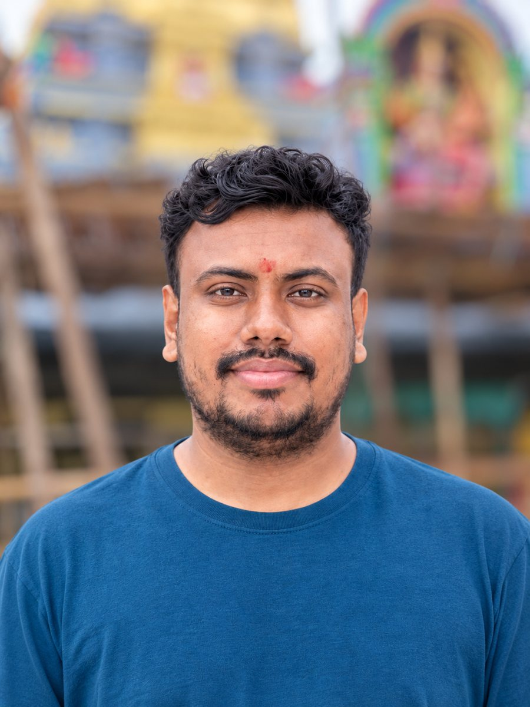

Network & infrastructure operations
LAN/WAN, switching, wireless, VLAN segmentation, firewall operations, server-room infrastructure and service availability.
Network · Infrastructure · Security
I’m Satyaban Choudhury, a Senior Network & Infrastructure Administrator with 3+ years of experience designing, securing and supporting enterprise technology environments. My work spans network operations, endpoint modernization and Microsoft security operations for organisations with 200+ users.
Based in Hyderabad, India. Working across FortiGate, Cisco, Microsoft Intune, Defender, Sentinel, Active Directory and IT governance.

Areas of focus
Practical administration and project delivery across the systems people rely on every day — designed around secure access, clear operations and measurable outcomes.
LAN/WAN, switching, wireless, VLAN segmentation, firewall operations, server-room infrastructure and service availability.
Microsoft Intune, Entra ID, Windows Autopilot, Conditional Access, Microsoft 365 and endpoint compliance management.
Microsoft Sentinel, Defender XDR, Defender for Cloud, KQL-based investigation, alert triage, threat hunting and response workflows.
FortiGate and Sophos administration, SSL/IPsec VPN, site-to-site connectivity, access policies and perimeter protection.
Office infrastructure relocation, AD-to-Intune modernization, endpoint security transitions and email/collaboration migrations.
SOC 2 Type II and ISO 27001 control evidence, SOPs, runbooks, incident response documentation and operational governance.
Selected work
A selection of infrastructure, endpoint and security initiatives, showing the challenge, delivery scope and operational result.
Led the IT migration for 150+ users during a corporate building move, coordinating the weekend cutover from planning and asset tagging through server-room relocation, network deployment and go-live validation.
Scope included Windows Server 2019 and ESSL systems, UPS and rack reassembly, Cat6 structured cabling, patch panels, Cisco CBS350 switches, Aironet 1850 wireless, TP-Link PoE, FortiGate 100F, site-to-site IPsec VPN and 150+ workstation setup. The relocation was completed with zero business-hour downtime.
Led the transition from Bitdefender GravityZone to Microsoft Defender to align endpoint protection and security visibility with the Microsoft security stack.
Work included migration planning, policy transition, endpoint deployment validation, monitoring and operational handover to Defender alert and incident workflows.
Migrated user and endpoint management from traditional Active Directory administration toward Microsoft Intune and Entra ID, modernizing device provisioning and endpoint controls.
Core work covered device enrollment, Windows Autopilot provisioning, configuration profiles, compliance policies, Conditional Access and remote-management workflows.
Led a phased email and collaboration migration for 700+ employees, maintaining data integrity and minimizing disruption while supporting users through the transition.
Scope included mailboxes, contacts, calendars, shared drives, accounts and distribution lists; DNS configuration for MX, SPF, DKIM and DMARC; delivery and authentication troubleshooting; user training and support documentation.
Architect and operate FortiClient SSL and IPsec VPN infrastructure for geographically distributed sites, with access controls enforced through FortiGate and identity integrated with Active Directory.
The environment supports 100+ concurrent VPN users. Operational work includes tunnel availability, authentication, firewall policy, routing and secure access validation.
Operate LAN and wireless infrastructure across Cisco managed switches, Aironet wireless and TP-Link PoE switching, with traffic segmented through VLAN policy and inspected at the FortiGate perimeter.
Operational scope includes switching and wireless availability, VLAN and trunk configuration, firewall policy, web filtering, VPN connectivity and network documentation. Diagrams shown publicly are conceptual and contain no production addressing.
Project descriptions are representative summaries. Company-specific addressing, credentials and production configurations are intentionally not published.
About Satyaban
A practical blend of network administration, endpoint modernization, security monitoring and IT governance.
I’m a Senior Network & Infrastructure Administrator with 3+ years of experience designing, deploying and supporting enterprise network, server and endpoint environments. My work spans FortiGate and Sophos firewalls, Cisco switching and wireless, SSL/IPsec VPN, Microsoft Intune, Microsoft Defender, Active Directory and Microsoft 365.
Alongside day-to-day operations, I lead infrastructure and platform migrations, troubleshoot complex service issues, automate repeatable administration with PowerShell, and support SOC 2 Type II and ISO 27001 audit readiness through practical controls and documentation.
Find me on LinkedIn ↗Career history
Primary L2 escalation for a 200+ employee environment, maintaining 99.5%+ uptime SLA and supporting infrastructure, endpoint and security operations.
Delivered L2 support for a 150-seat call centre, improving SLA adherence by 75%.
Provided L2 support for 100+ users across endpoints, servers and network equipment.
Professional credentials
Credentials supporting my work across security operations, endpoint management, networking and cybersecurity.
Earned Nov 2026 · valid to Nov 2027
Earned Jun 2026 · valid to Jun 2027
Issued Mar 2026 · valid to Mar 2028
Issued Mar 2026 · valid to Mar 2028
Completed
Course completion · Udemy
Planned learning: CompTIA Security+.
Get in touch
I’m open to opportunities in network infrastructure, systems administration, endpoint management and IT security operations in Hyderabad or remote.
For roles, collaboration or professional enquiries.